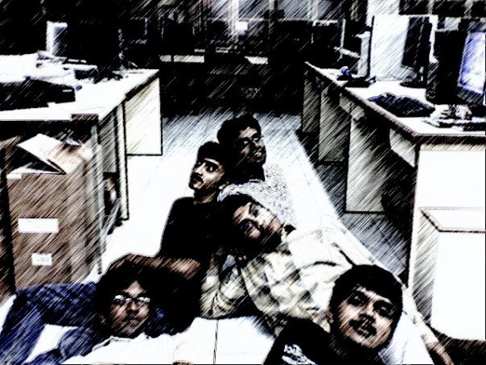
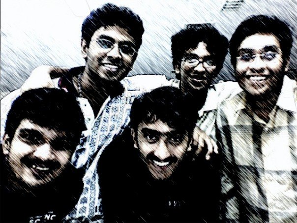

My Experiments with AI
This is a picture from the summer of 2007. When I was half my current age. This picture captures the vibe I inhabit these days as I go down many rabbit holes with Claude (Code / Cowork).


Theoretical Computer Science lab, IIT Madras, ~5 a.m., summer 2007.
This picture is from the Theoretical Computer Science lab at IIT Madras, which had the swankiest desktop our CS department could afford (a Mac, with a built-in web camera). Probably around 4:30 or 5 a.m., after a bunch of us had pulled an all-nighter. Those were the final few weeks of our undergrad days, as we were wrapping up our individual B.Tech projects. Ah, the shenanigans! This was our attempt at a Friends’ style picture.
I find myself in a remarkably similar headspace now — nearly two decades later — with Claude and my AI experiments. The same rabbit hole. You code something, watch it come to life, spot the edge cases, go back to fix it, introduce a new edge case of errors, rinse and repeat. But the joy of seeing something come alive is real. Like it was, when we wrote code and took part in programming contests.
I just came across this tweet today. Truly feels like it.

This will hopefully be an evolving webpage where I want to capture my own learnings as I build these products — not as a tutorial, not as a guide, but as a personal log. Something born out of good vibe coding.
Your first workout will be bad.
Your first podcast will be bad.
Your first speech will be bad.
Your first video will be bad.
Your first ANYTHING will be bad.
But you can't make your 100th without making your first.
Vibe away ;)
Want to see more writing? Subscribe to my Substack for regular essays.